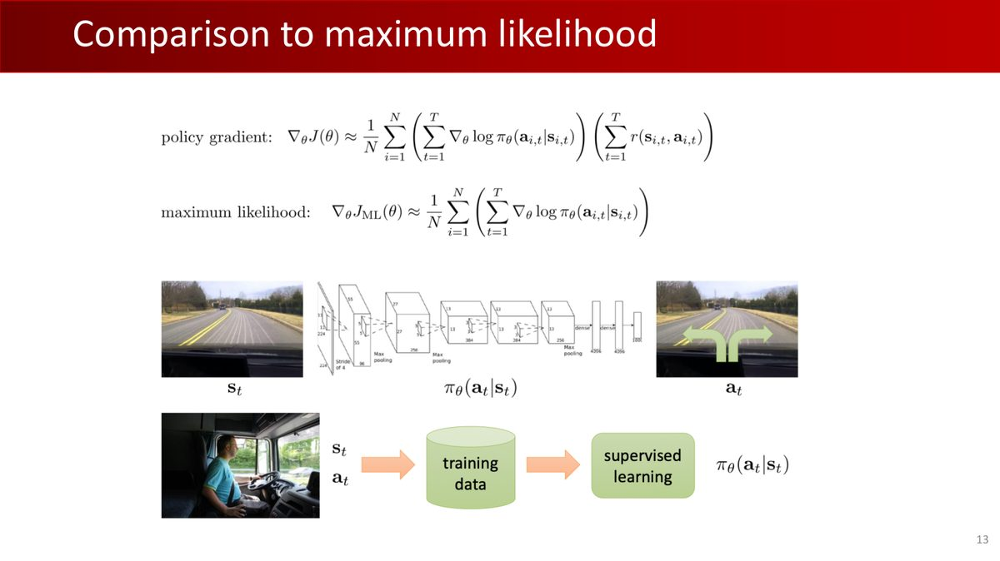
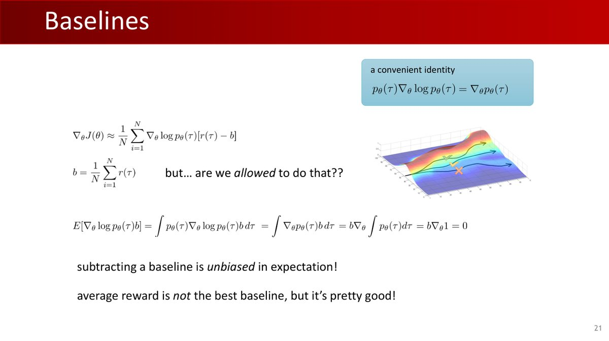
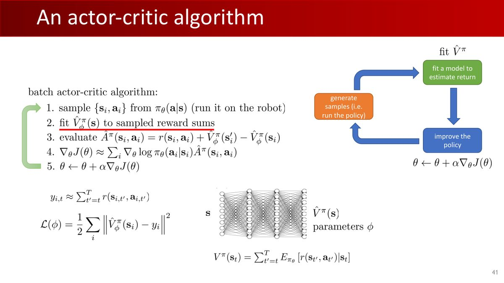
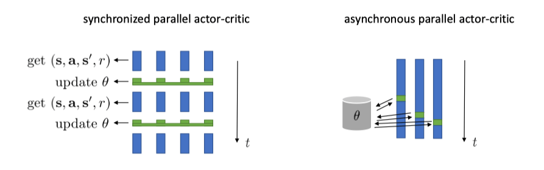
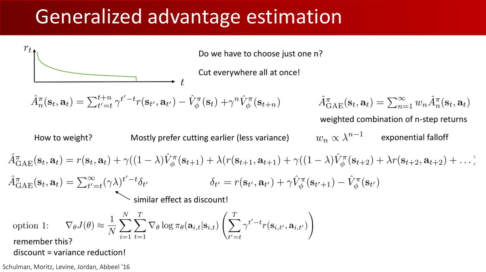
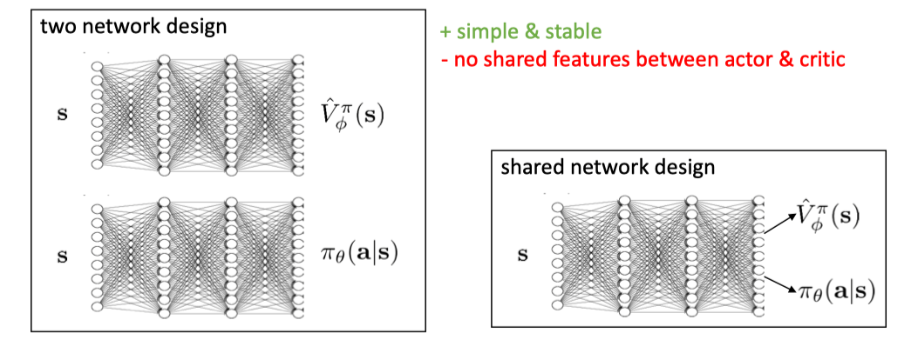
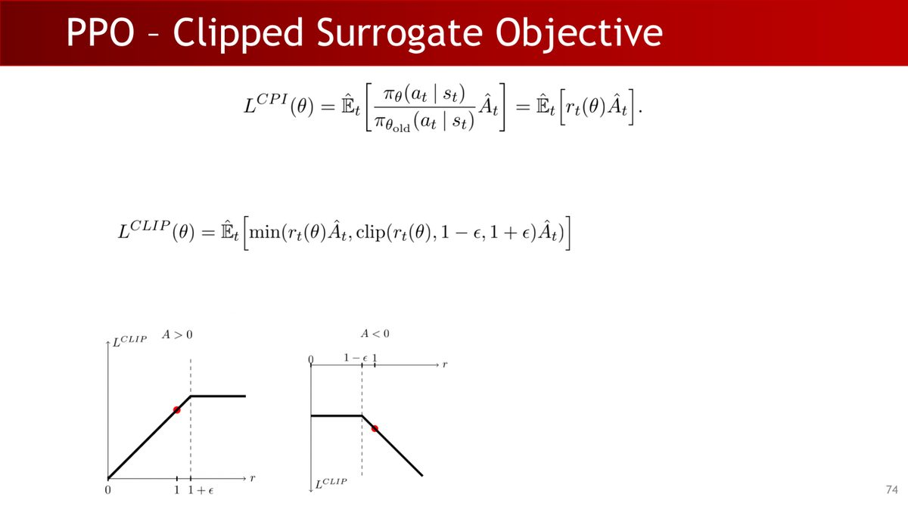
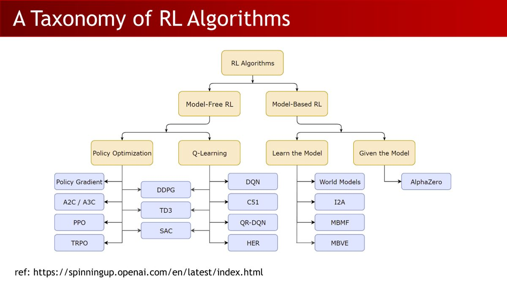

打开本章课件逐页中文翻译：保留原页码、原文与来源，可在学完一节后对照相应页面。
1从模仿学习到强化学习
第 8 章结尾总结了 IL 的三大局限：依赖专家数据、缺少直接回报优化、纠错数据覆盖不足。标准 BC 拟合固定专家数据，学习范围受演示覆盖限制。补采、干预或 DAgger 可以增加训练数据，帮助策略学习分布外状态（OOD）下的动作。
| 离线学习（Offline） | 在线学习（Online） | |
|---|---|---|
| 数据来源 | 预先收集的固定数据集 | 学习过程中主动与环境交互产生 |
| 代表 | BC（模仿学习） | RL（强化学习，多数算法） |
| 探索能力 | 训练只使用已有数据覆盖的情形 | 试错探索更广泛的状态空间 |
BC 像依据骑车示范学习动作；训练若没覆盖失衡后的恢复，执行时可能摔倒。RL 像自己骑——通过不断尝试和调整，逐渐学会保持平衡（获得「不摔倒」这个隐含的高奖励）。RL 的探索让智能体能学会处理专家演示中从未出现的状态。
强化学习也可以使用固定数据集，这称为离线强化学习（Offline RL）。它与 BC 的区别在于，还会利用奖励信号优化决策。
2RL 的目标函数
RL 的目标：找到策略参数 $\theta^*$，最大化该策略下轨迹的期望回报：
$$ J(\theta) = \mathbb{E}_{\tau \sim p_\theta(\tau)} [R(\tau)] = \mathbb{E}_{\tau \sim p_\theta(\tau)} \left[ \sum_{t=0}^{T-1} r(s_t, a_t) \right] $$
其中 $p_\theta(\tau) = p(s_0)\prod_{t=0}^{T-1}\pi_\theta(a_t|s_t)\,p(s_{t+1}|s_t,a_t)$——轨迹分布由策略和环境共同决定。策略或环境可以有随机性，单条轨迹的回报不同，所以我们优化期望。本课程主要关注有限时间步（finite horizon）。
直接优化 $J(\theta)$ 很难——期望涉及对所有可能轨迹的积分/求和，连续高维空间无法处理。解法是蒙特卡洛 + 梯度，这正是下一节的内容。
3策略梯度定理
θ 是策略参数，τ 是轨迹，R 是累计奖励，$\nabla_\theta$ 表示对参数求梯度。这里初始状态分布、环境转移和奖励函数本身不显式依赖 θ；策略概率可微，且可交换微分与积分。环境项导数为零的直接原因是它与 θ 无关，马尔可夫假设只是给出本节的轨迹分解。若策略依赖历史，也可对每步条件动作概率使用同一 score 思路。
奖励可以不可微，但若奖励显式依赖 θ，梯度还会含直接奖励导数项。我们先讨论通常的固定奖励任务。
三步推导：
3.1 蒙特卡洛近似
用当前策略采样 $N$ 条轨迹，平均回报近似期望：
$$ J(\theta) \approx \frac{1}{N}\sum_{i=1}^{N} R(\tau^{(i)}) $$
但为了梯度上升，我们需要 $\nabla_\theta J(\theta)$——而对 MC 近似形式直接求梯度很难，因为轨迹生成过程本身依赖 $\theta$。
3.2 对数导数技巧
从期望定义出发，交换梯度与积分：$\nabla_\theta J(\theta) = \int \nabla_\theta p_\theta(\tau) R(\tau)\,\mathrm{d}\tau$。关键引理：
$$ \nabla_\theta p_\theta(x) = p_\theta(x)\, \nabla_\theta \log p_\theta(x) $$
（证明只需链式法则：$\nabla_\theta\log p_\theta(x) = \frac{1}{p_\theta(x)}\nabla_\theta p_\theta(x)$，两边乘 $p_\theta(x)$。）代入得：
$$ \nabla_\theta J(\theta) = \mathbb{E}_{\tau \sim p_\theta(\tau)} \left[ \nabla_\theta \log p_\theta(\tau)\, R(\tau) \right] $$
在上述固定奖励设定下，梯度表达式中没有出现 $\nabla_\theta R(\tau)$。计算时只需获得每个时间步的奖励值，奖励函数可以不可导。这让 RL 可以处理稀疏、非连续的奖励（任务成功 = 1，失败 = 0）。
3.3 参数独立的环境项消失
展开 $\log p_\theta(\tau) = \log p(s_0) + \sum_t [\log\pi_\theta(a_t|s_t) + \log p(s_{t+1}|s_t,a_t)]$ 并对 $\theta$ 求导：初始状态分布与状态转移概率都与 $\theta$ 无关，两项梯度为 0。最终：
$$ \nabla_\theta J(\theta) = \mathbb{E}_{\tau \sim p_\theta(\tau)} \left[ \left( \sum_{t=0}^{T-1} \nabla_\theta \log \pi_\theta(a_t | s_t) \right) R(\tau) \right] $$
这就是策略梯度定理。MC 估计（$\hat{g}$）用 $N$ 条采样轨迹实现它。
顺带引入两个重要概念（笔记）：
- Model-Free：不需要知道（甚至学习）环境模型，只需与环境交互采样——本课程的主要设定（仿真采样时，同样需要定义初始分布、任务和终止条件）；
- Model-Based：利用已有或学习的环境模型规划/生成模拟数据；真实世界学习可选择有模型、无模型或混合方法。
4REINFORCE 与 PG vs BC
REINFORCE 算法四步循环：① 用当前 $\pi_\theta$ 采样 $N$ 条轨迹；② 计算每条轨迹的总回报 $R(\tau^{(i)})$；③ 计算梯度估计 $\hat{g}$；④ 梯度上升更新 $\theta \leftarrow \theta + \alpha\hat{g}$。
直观意义：按照回报加权提高采样动作的相对概率；使用适当基线后，正优势与负优势分别鼓励和抑制动作；更新幅度由整条轨迹回报加权。
PG vs BC：两种不同目标的对比

| BC（最大似然） | PG（策略梯度） | |
|---|---|---|
| 目标 | 最大化 $\log\pi_\theta(a|s)$（专家数据） | 最大化当前策略下的期望回报 $J(\theta)$；回报加权对数概率是采样更新使用的代理表达式 |
| 权重 | 标准 BC 对专家样本使用统一权重；样本来自固定演示集 | 用回报或优势加权；优势为负时抑制对应动作，原始正回报不直接产生负权重 |
| 缺陷 | 拟合演示中的动作，可能同时学到专家的噪声、手抖与次优动作 | 通过回报与优势估计优化动作选择，信用分配仍然困难 |
BC 与 PG 的梯度形式相似，但数据分布和目标不同：BC 在固定专家数据上最大化动作似然，PG 在当前策略轨迹上用回报加权。若 on-policy 回报恒为 1，期望 score 梯度为零；BC 的梯度则由专家样本的动作似然决定。覆盖不足时，BC 难以学会所有纠错动作；RL 则通过环境交互获取回报信号。
5PG 的挑战：高方差与样本效率
5.1 高方差
MC 用 $N$ 条轨迹估计梯度，但环境和策略的随机性使单条轨迹回报波动巨大；长时序（大 $T$）任务轨迹空间极大，有限样本远不足以精确估计。结果：梯度噪声大、训练不稳定、收敛慢、甚至发散——即使超参数相同，仅因采样不同，多次训练结果差异巨大。

5.2 样本效率低与 On/Off-Policy
REINFORCE 是 On-Policy：梯度必须由当前策略生成的轨迹计算——参数更新后，旧数据不再严格服从当前策略；若继续使用，须控制分布变化或作相应校正。每次迭代都要重新采样，样本复杂度极高。
| On-Policy（同策略） | Off-Policy（异策略） | |
|---|---|---|
| 数据来源 | 必须由当前策略产生 | 可用旧策略/专家/探索策略数据（方法可能使用重要性采样、Bellman 更新等，是否使用概率比取决于具体算法） |
| 代表 | REINFORCE、SARSA、PPO | Q-Learning、DDPG、SAC |
| 特点 | 围绕近期策略数据优化；效果需同任务比较；样本效率低（贵） | 样本效率高（Replay Buffer 复用）；优化目标与数据分布可能不一致 |
本节的典型训练示例持续交互，属于在线学习；但 On/Off-Policy 与在线/离线是不同分类轴，Off-Policy 也可使用固定离线数据。
5.3 高斯策略（连续动作的标准选择）
连续动作空间里，策略通常输出高斯分布的均值：$\pi_\theta(a_t|s_t) = \mathcal{N}(a_t;\mu_\theta(s_t), \Sigma)$。其对数似然梯度是：
$$ \nabla_\theta \log \pi_\theta(a_t|s_t) = \left(\frac{\partial \mu_\theta(s_t)}{\partial \theta}\right)^{\top} \Sigma^{-1} (a_t - \mu_\theta(s_t)) $$
（此式假设协方差 Σ 固定且正定；若 $\Sigma=\sigma^2I$，均值梯度对应平方误差方向；学习方差时还须添加方差参数的导数。）一个漂亮的结构：梯度 = 均值函数梯度 × 加权「误差向量」，也就是在误差方向上调整均值。
6降方差：Reward-to-Go 与 Baseline
6.1 Reward-to-Go：未来不影响过去
$t$ 时刻的动作 $a_t$ 只能影响 $t$ 及以后的奖励。REINFORCE 用总回报 $R(\tau)$ 加权，把与当前决策无关的过去奖励也算了进去——纯噪声。改进：只用 Reward-to-Go：
$$ \hat{Q}(s_t, a_t) = \sum_{t'=t}^{T-1} r(s_{t'}, a_{t'}) $$
仍然是 $\nabla_\theta J$ 的无偏估计，且方差通常更低。
6.2 Baseline：动作无关的控制变量
另一个问题：有限样本PG的方差会受奖励尺度和偏移影响；理想期望梯度不受动作无关常数偏移影响。若所有轨迹回报都为正（哪怕有好有坏），所有动作都会被「鼓励」。我们想要的是相对比较：比平均好的鼓励、比平均差的抑制。解法：减去只依赖状态、不依赖动作的基线 $b(s_t)$：
$$ \nabla_\theta J(\theta) = \mathbb{E}\left[ \sum_t \nabla_\theta \log \pi_\theta(a_t|s_t) (\hat{Q}(s_t,a_t) - b(s_t)) \right] $$
$\mathbb{E}_{a_t\sim\pi_\theta}[\nabla_\theta\log\pi_\theta(a_t|s_t)\,b(s_t)] = b(s_t)\int \pi_\theta(a_t|s_t)\frac{\nabla_\theta\pi_\theta(a_t|s_t)}{\pi_\theta(a_t|s_t)}\mathrm{d}a_t = b(s_t)\,\nabla_\theta\int\pi_\theta(a_t|s_t)\mathrm{d}a_t = b(s_t)\,\nabla_\theta(1) = 0$。
即：对固定或独立估计的动作无关 $b$，减基线不改变期望；合适的基线可降低方差。
实践中常用采样均值基线 $b = \frac{1}{N}\sum_i R(\tau^{(i)})$（或用平均 Reward-to-Go）。使用采样均值时，要检查其中是否包含当前样本自身的回报；若包含，i.i.d. 轨迹标量情形会将梯度缩放为 $1-1/N$。可用独立数据或留一均值避免这种有限样本偏差。最优基线（笔记推导）：$b^* = \frac{\mathbb{E}[(\nabla_\theta\log p_\theta(\tau))^2 R(\tau)]}{\mathbb{E}[(\nabla_\theta\log p_\theta(\tau))^2]}$——按梯度幅值平方加权的回报期望，通常难以计算。对于向量梯度，“平方”应理解为所选方差准则下的梯度范数平方，例如最小化总方差时使用 $\|\nabla_\theta\log p_\theta(\tau)\|^2$。
7价值函数与优势函数
常用的基线是状态价值函数，它会随当前状态变化——「这个状态本身值多少」：
本节推广到折扣有限时域目标 $J_\gamma(\theta)=\mathbb{E}_\tau[\sum_{t=0}^{T-1}\gamma^t r_t]$，$\gamma=1$ 时回到前文。状态约定包含剩余时间，终态 $V(s_T)=0$，因此 $V/Q$ 也反映当前时刻。
| 函数 | 定义 | 含义 |
|---|---|---|
| 状态价值 $V^{\pi_\theta}(s_t)$ | $\mathbb{E}\left[\sum_{t'=t}^{T-1} \gamma^{t'-t}r_{t'} \mid s_t\right]$ | 从 $s_t$ 出发遵循 $\pi_\theta$ 的期望折扣回报 |
| 动作价值 $Q^{\pi_\theta}(s_t,a_t)$ | $r(s_t,a_t) + \gamma\mathbb{E}[V^{\pi_\theta}(s_{t+1})]$ | 在 $s_t$ 采取 $a_t$ 后遵循 $\pi_\theta$ 的期望回报 |
| 优势函数 $A = Q - V$ | — | 动作 $a_t$ 比「平均动作」好多少 |
折扣因子 $\gamma \in [0,1)$ 的三重作用：① 在奖励有界时保证无限时域累计折扣回报有限；② 表达对即时奖励的偏好；③ 隐式鼓励尽早完成任务（越晚的奖励折扣越多）。
用 $V$ 做基线后，权重变为优势函数估计：
$$ \hat{A}(s_t, a_t) = r(s_t,a_t) + \gamma\hat{V}(s_{t+1}) - \hat{V}(s_t) $$
$\hat{A} > 0$：动作比平均好 → 增加其概率；$\hat{A} < 0$：降低概率。策略梯度的最终形态：
$$ \nabla_\theta J_\gamma(\theta) = \mathbb{E}_{\tau\sim p_\theta}\left[\sum_{t=0}^{T-1}\gamma^t \nabla_\theta \log \pi_\theta(a_t|s_t)\, A^{\pi_\theta}(s_t,a_t)\right] $$
如何估计 $V(s_t)$？
- 蒙特卡洛：所有经过 $s_t$ 的样本的平均 Reward-to-Go；
- 神经网络（Critic）：$\hat{V}_\phi(s)$ 监督学习，数据集 $\mathcal{D} = \{(s_{i,t},\ r_{i,t} + \gamma\hat{V}_\phi(s_{i,t+1}))\}$——注意目标里用了函数自身的估计，这叫自举（Bootstrap）。形象的比喻（笔记）：「在河里拽自己的鞋带把自己拽起来」。
8Actor-Critic
价值网络训练目标 $y_t=r_t+\gamma V_\phi(s_{t+1})$ 通常停止梯度传播；Actor 更新中的优势也通常停止梯度。真实终止状态后没有未来奖励，应令末端价值为零；为了采集固定长度片段而人为截断时，通常保留末端自举。实现时分别处理真实终止与采集截断，可以避免系统性低估回报。
有限片段的 GAE 为 $\hat A_t=\sum_{l=0}^{T-t-1}(\gamma\lambda)^l\delta_{t+l}$，等价反向递推 $\hat A_t=\delta_t+\gamma\lambda\hat A_{t+1}$（跨真实终止时切断递推）。γ 表示奖励折扣，λ 控制多步估计的混合，两者作用不同。
把「用神经网络估计 V」与策略梯度结合，就是 Actor-Critic：

- Actor（演员）：策略网络 $\pi_\theta(a|s)$，负责决策；
- Critic（评论家）：价值网络 $V_\phi(s)$（或 $Q_\phi(s,a)$），负责评估「状态/动作有多好」；
- 推理时只用 Actor，Critic 是训练期的「教练」。
Batch vs Online
| Batch Actor-Critic | Online Actor-Critic | |
|---|---|---|
| 流程 | 收集整批轨迹 → 批量更新 Critic → 算优势 → 更新 Actor | 每步：采样动作 → 得 $(s,a,r,s')$ → TD 误差更新 Critic → 用 $\delta$ 当优势更新 Actor |
| 特点 | 梯度稳定（方差低），存储多、更新慢 | 更新频繁、数据利用率高，单步更新方差大 |
架构选择（笔记配图）：分离网络（简单稳定，无特征共享）vs 共享网络（参数效率高，训练复杂）。实践上 Online AC 也常并行化：多个 worker 同时采集经验，同步（Sync，受限于最慢 worker）或异步（Async，更快）——A3C 就是异步并行 AC。

GAE：在 MC 与 TD 之间插值
完整轨迹的 MC 回报在对应采样与终止假设下无偏，但常有高方差。TD(0) 用价值估计自举，常降低方差；价值估计误差会带来偏差。准确价值函数下，TD 残差的条件期望可等于真实优势。广义优势估计（GAE, Schulman et al. '16）用指数衰减 $\lambda$ 把 1-step、2-step、…、n-step 回报加权混合——「Cut everywhere all at once」：

$\lambda$ 是 bias-variance 权衡旋钮：$\lambda \to 0$ 更偏 TD（低方差高偏差），$\lambda\to1$ 更接近 MC；完整真实终止且末端价值为零时 GAE 回报化为 MC 回报减基线，若人为截断并自举，则仍受末端估计误差影响。GAE 后来成了 PPO 的标配组件。

9PPO：机器人学习中常用的 PPO
读公式时区分两个 r：本节用 $r_t$ 表示概率比，用 $r(s_t,a_t)$ 表示环境奖励。PPO（Proximal Policy Optimization，近端策略优化）一般使用旧策略近期采集的固定批次，多轮小批量优化后重新采样；它通常仍被归为 on-policy。ε=0.2 时裁剪区间为 [0.8,1.2]，这个区间用于计算代理目标；实际概率比仍可能超出区间。
优势估计、更新轮数、学习率和策略 KL 的监测共同影响稳定性。使用归一化和初始化技巧时，仍需核对算法假设，并监测策略 KL 与真实回报。裁剪本身不保证真实回报单调提升。
普通同策略PG通常每轮采集新数据，交互成本较高。Off-Policy（重要性采样）理论上可复用旧数据，但新旧策略分布偏离过大时，代理更新可能使性能退化甚至训练失稳（课件 p71：policy 采到坏动作 → 学得更差 → 恶性循环）。TRPO 的直觉：每次更新别让策略变化太大（KL 约束）；PPO 用一阶优化配合裁剪或KL惩罚抑制过大策略变化；这种方式与 TRPO 的硬 KL 约束有所不同（课件 p73-76）：
$$ L^{\text{CLIP}} = \mathbb{E}_t\left[ \min\left( r_t A_t,\ \text{clip}(r_t, 1-\epsilon, 1+\epsilon)\,A_t \right) \right], \qquad r_t = \frac{\pi_\theta(a_t|s_t)}{\pi_{\theta_{old}}(a_t|s_t)} $$

两条约束路线：Clipped Surrogate（裁剪代理目标）与 Adaptive KL penalty（软约束）。实验结论（课件 p77）：在展示的实验中，裁剪配置取得较好结果；比较应结合其参数和基准。
实现 Tricks（课件 p80-83，引用 ICLR 2020《Implementation Matters in Deep Policy Gradients》）：
- 更新轮数 K 不宜过大（原始论文 RoboschoolHumanoidFlagrun 用 K=15）；Minibatch：每轮把 buffer 分小批更新；
- 优势归一化：minibatch 内归一化，$V$ 估计不准时帮助中心化到 0；状态归一化：维护各维 running mean；
- 正交初始化：原课件引用的实现研究发现其有利，效果依网络与任务而定；
- 总损失 = 策略损失 + 价值损失（MSE）+ 熵奖励（鼓励探索）。

本章与作业 3 以 PPO/GAE 为例学习策略优化。选择其他任务的算法时，可以据此比较数据来源、动作空间和训练条件。公开作业 3 使用 MuJoCo Playground/MJX 与 JAX，环境配置按该工程的依赖文件进行；课件中的 Isaac Gym 是另一个仿真器示例。演示热启动与 RL 微调可组合使用，效果仍取决于任务与训练设置。
10本章小结
| 核心概念 | 一句话解释 |
|---|---|
| RL 目标 | 最大化期望回报 $J(\theta)$；梯度估计不需要奖励可导 |
| 策略梯度定理 | 对数导数技巧 + 参数独立的环境项消失 |
| REINFORCE | MC 梯度估计 + 梯度上升；On-Policy、高方差、低样本效率 |
| PG vs BC | BC 拟合专家动作；PG 用策略采样回报加权，二者分布和目标不同 |
| Reward-to-Go | 只加权未来的奖励（因果性），对应设定下无偏，通常减少无关奖励带来的方差 |
| Baseline / Advantage | 固定或独立估计的动作无关 $b(s_t)$ 保持期望，合适基线可降方差；$V$ 是常用状态基线；同批估计须注意偏差 |
| Actor-Critic | Critic 拟合 V（自举），Actor 用优势更新；推理只用 Actor |
| GAE / PPO | λ 混合 n-step 回报；裁剪代理目标抑制过大更新；实际比率仍可能超出裁剪区间 |
第 10 章收官：机器人任务与前沿——足式运动、机械臂抓取、非抓握操作与灵巧操作（Lecture 10-13）与作业 4。
11动手实践：作业 3 · PPO 与四足机器人
本章配套北大原版作业 3：让四足机器人「站起来、走起来」。三个部分：纯 numpy 的 PPO 组件 + 两个奖励函数设计。
代码位置：Homeworks/03-RL-Robot-Control/（含完整代码与训练视频）。
11.1 任务总览
| 任务 | 分值 | 内容 | 对应本章 |
|---|---|---|---|
| Part 1 · PPO 组件 | 40% | numpy 实现 MC / TD(0) / GAE 优势估计 + clip 损失 + 价值损失 | §6-9 |
| Part 2 · Getup 奖励 | 30% | 设计奖励让四足机器人从摔倒状态站起 | §2（奖励工程） |
| Part 3 · Walk 奖励 | 30% | 实现速度跟踪项，PPO 训练行走 | §9（PPO 实战） |
11.2 环境搭建
conda create -n eai-hw3 python=3.10
conda activate eai-hw3
pip install -r requirements.txt固定公开工程依赖 MuJoCo Playground/MJX、JAX 与相应 CUDA 运行条件（例如 playground==0.0.4、jax[cuda12]，以仓库依赖文件为准）。Part 1 只需 NumPy；Part 2/3 涉及仿真与训练。先按工程 README 配置环境，不做无依据的 Isaac 框架迁移。公开作者训练视频在 Handin/experiments/solutions/，视频不替代自己的运行验证。
11.3 Part 1：PPO 优势估计与损失（40%）
完成 hw_py/part1_ppo.py 的 5 个 TODO 函数，每个都有对应的检查函数（check_monte_carlo 等；给定输入通过不等于所有边界情况或完整训练通过）：
# 1) MC 优势：A_t = G_t - V(s_t)，G_t 为折扣回报
def monte_carlo_advantage(rewards, values, gamma=0.99):
...
# 2) TD(0) 残差：δ_t = r_t + γV(s_{t+1}) - V(s_t)
def td_residual_advantage(rewards, values, gamma=0.99):
...
# 3) GAE：A_t = Σ (γλ)^k · δ_{t+k}，λ 在 MC 与 TD 间插值
def generalized_advantage_estimation(rewards, values, gamma=0.99, lam=0.95):
...
# 4) 最小化损失：负 clip 代理目标 - entropy_weight * 分布熵
def compute_policy_loss(ratio, adv, dist_entropy, epsilon=0.2, entropy_weight=0.01):
...
# 5) 价值损失：MSE(V_pred, V_target)
def compute_value_loss(values, returns):
...GAE 用反向递推：从轨迹末端向前算 $\hat{A}_t = \delta_t + \gamma\lambda\hat{A}_{t+1}$；clip 损失需取负代理目标并减分布熵奖励；完整分布熵不能由单个抽样动作的 log 概率还原。注意 $\min$ 和概率比 $r_t = \exp(\log\pi_{new} - \log\pi_{old})$（用 log 差避免数值问题）；熵奖励系数通常取 0.001~0.01。
11.4 Part 2：Getup 奖励设计（30%）
在 MyGetupEnv.step 中实现奖励，鼓励机器人：① 达到并保持期望身高；② 姿态稳定（重力方向对齐）；③ 关节角接近默认姿态；④ 身体角速度最小化：
# 四个目标的加权组合，权重需自己调
reward = (w1 * reward_height # 身体高度接近目标（如 0.35m）
+ w2 * reward_orientation # 重力向量与身体 z 轴对齐
+ w3 * reward_pose # 关节角接近默认站姿
+ w4 * reward_ang_vel) # 角速度惩罚（通常为负）交付：part2_height_error.png（高度误差 < 0.15）与 part2_video.mp4。奖励工程经验：高度项用高斯形式 $\exp(-(h-h_{target})^2/\sigma^2)$ 比线性更平滑；朝向项可用重力投影；惩罚项系数从 10⁻¹ 量级试起。
11.5 Part 3：Walk 速度跟踪（30%）
只需实现两个项（其余已给好）：
# 线速度跟踪：奖励接近指令速度 v_cmd 的 x/y 分量
tracking_lin_vel = np.exp(-np.linalg.norm(vel_xy - cmd_xy)**2 / 0.25)
# 角速度跟踪：奖励接近指令 yaw rate
tracking_ang_vel = np.exp(-(yaw_rate - cmd_yaw)**2 / 0.25)交付：part3_LinVel_error.png（误差 < 0.15）与 part3_video.mp4。
总用时估计 1-2 天：Part 1 半天（纯数学实现，GAE 建议手推一遍反向递推）、Part 2 半天（调奖励权重是 RL 工程师的日常手艺）、Part 3 半天到一天（取决于 GPU）。没有 GPU 也没关系：可先完成 Part 1 的数学实现与给定检查，Part 2/3 的奖励函数逻辑可以读完代码后用 Paper 级理解作答。学有余力，把 Part 2 的四个权重各调一次看行为变化——这是理解「奖励函数决定行为」最直接的方式。
理解检查
为什么固定环境转移在求导时消失？（它不依赖策略参数。）回报恒为1时 on-policy score 的期望是多少？（0。）PPO clip 是否硬限制所有概率比？（否。）采集片段截断时是否必须置末端价值为0？（否，应区分真实终止。）
先遮住括号中的答案，用本章符号和一个具体例子说明理由。遇到疑问时，对照相应节的模型假设检查自己的推理。
附A术语表
| 术语 | 解释 |
|---|---|
| 离线 / 在线学习 | 固定数据集学习 / 与环境交互持续产生数据学习 |
| 期望回报 $J(\theta)$ | 策略下所有轨迹回报的期望，RL 的优化目标 |
| 蒙特卡洛估计 | 采样 $N$ 条轨迹的平均近似期望 |
| 对数导数技巧 | $\nabla_\theta p_\theta(x) = p_\theta(x)\nabla_\theta\log p_\theta(x)$ |
| 策略梯度定理 | $\nabla_\theta J = \mathbb{E}[\sum_t\nabla_\theta\log\pi_\theta(a_t|s_t)\,R(\tau)]$ |
| REINFORCE | MC 策略梯度的基础算法（采样→算回报→梯度→上升） |
| On-Policy / Off-Policy | 数据须由当前策略产生 / 可用其他策略数据（重要性采样） |
| Reward-to-Go | 只用 $t$ 之后奖励加权（因果性） |
| Baseline | 减动作无关基线保持期望梯度，选择适当基线可降方差 |
| $V$ / $Q$ / $A$ | 状态价值 / 动作价值 / 优势函数（$A=Q-V$） |
| 自举（Bootstrap） | 用函数自身估计更新自身（TD 目标） |
| TD 误差 | $\delta = r + \gamma V(s') - V(s)$，一步自举误差 |
| GAE | $\lambda$ 指数混合 n-step 回报的广义优势估计 |
| PPO | 裁剪概率比的近端策略优化（$L^{CLIP}$） |
| 熵奖励 | 鼓励探索的损失项（策略熵 × 小系数） |
附B课件 87 页完整索引
原版 Lecture 9 课件共 87 页（GitHub 原文件）。下表逐页列出内容及在本教程中的位置：
| 页码 | 页面内容 | 在教程中的位置 |
|---|---|---|
| p1 | 封面：Lecture 9 - Policy II | 封面区 |
| p2-3 | Logistics：期中考试（30%、4/21、cheat sheet） | §11（背景） |
| p4 | 作业 2 发布（点云位姿估计抓取） | §11（呼应第 5 章） |
| p5 | 主题页：策略梯度 | §3 开头 |
| p6-8 | RL 目标与评估目标函数 | §2 |
| p9-12 | 直接策略微分与策略梯度评估 | §3 |
| p13 | 与最大似然（BC）的对比 | §4 |
| p14 | 高斯策略例子 | §5.3 |
| p15 | 刚才做了什么（总结） | §3 |
| p16 | 部分可观测性 | §7（铺垫） |
| p17 | 策略梯度的问题（高方差） | §5.1 |
| p18 | 回顾页 | §5 |
| p19 | 主题页：降方差 | §6 开头 |
| p20 | Reward-to-Go | §6.1 |
| p21 | Baseline：无偏性（「are we allowed to do that??」） | §6.2 |
| p22 | 方差分析：最优基线（梯度幅值加权） | §6.2 |
| p23 | 回顾：采样-拟合-改进循环 | §6-8（桥梁） |
| p24 | 主题页：实现策略梯度 | §5（实践） |
| p25-27 | 自动微分伪代码（MLE vs PG 对照） | §4（对照） |
| p28 | 实践建议：大 batch、自适应学习率 | §5.1 |
| p29 | 回顾：on-policy 与重要性采样 | §5.2 + §9 |
| p30 | 主题页：Actor-Critic 算法 | §8 开头 |
| p31 | 改进策略梯度：Reward-to-Go（回顾） | §6.1 |
| p32 | 如何处理期望：「如果我们知道这部分？」 | §7（引导） |
| p33 | 定义：Q 函数与价值函数 | §7 |
| p34 | 基线怎么办？ | §7 |
| p35 | 状态与状态-动作价值函数 | §7 |
| p36-39 | 价值函数拟合 / 策略评估 / MC 评估 / 能否更好 | §7（V 估计） |
| p40 | 策略评估例子：TD-Gammon（1992）、AlphaGo（2016） | §7 |
| p41 | Actor-Critic 算法循环 | §8 |
| p42-44 | 折扣因子与 PG 的折扣（Thomas ICML 2014 参考） | §7（γ） |
| p45 | 带折扣的 Actor-Critic | §8 |
| p46 | 主题页：AC 设计决策 | §8 |
| p47 | 架构设计：两网络 vs 共享网络 | §8 |
| p48 | Online AC 实践：并行 worker、同步/异步 | §8 |
| p49-54 | Off-policy AC 尝试与修复（Replay Buffer、SAC 引子） | §5.2 + §9（铺垫） |
| p55 | 主题页：Critic 作为基线 | §7 |
| p56 | Critic 做状态相关基线的权衡 | §7 |
| p57 | 控制变量：动作相关基线 | §7（延伸） |
| p58 | Eligibility traces 与 n-step 回报 | §8（GAE 铺垫） |
| p59 | GAE（Schulman et al. '16） | §8 |
| p60 | 主题页：回顾、例子与扩展阅读 | §8 结尾 |
| p61 | AC 算法回顾 | §8 |
| p62 | 例子：GAE 高维连续控制（Schulman '16） | §8 |
| p63 | 例子：A3C 异步方法（Mnih '16） | §8 |
| p64 | AC 推荐阅读（Sutton 1999 等经典论文） | 附录 C |
| p65 | 主题页：PPO（Schulman et al., OpenAI 2017） | §9 开头 |
| p66 | On-policy 低效问题 | §9 |
| p67-70 | Off-policy 与重要性采样推导、一阶近似 | §9 |
| p71 | 问题：分布变化导致训练崩溃 | §9 |
| p72 | TRPO：约束优化直觉 | §9 |
| p73 | PPO 两种约束方法（clip / KL） | §9 |
| p74 | Clipped Surrogate Objective | §9 |
| p75 | Adaptive KL penalty | §9 |
| p76 | 总损失与其他 tricks | §9 |
| p77 | 实验 1：Clipping vs KL | §9 |
| p78 | 实验 2：PPO vs 其他 on-policy 算法 | §9 |
| p79 | 实现 tricks 参考（知乎、ICLR blog、Engstrom ICLR 2020） | §9 |
| p80-81 | 更新 tricks：K 值、minibatch、课程组实验数据 | §9 |
| p82 | 归一化：优势归一化、状态归一化 | §9 |
| p83 | 初始化：正交初始化优于 Xavier | §9 |
| p84 | PPO 优缺点总结 | §9 |
| p85 | RL 算法分类学（Spinning Up） | §9 |
| p86 | 扩展阅读与练习（OpenAI Spinning Up） | 附录 C |
| p87 | 结尾页：下集预告 Midterm & Lecture 10 - Policy III | 页脚（下一章预告） |
附C参考资源
- 课程官网：pku-epic.github.io/Intro2EAI_2025
- 本教程素材来源仓库：zhuozhiyongde/Embodied-Artificial-Intelligence-2025Spring-PKU
- 本章课件：
Slides/Lecture09_04_14.pdf（87 页） - 本章笔记原文：
Notes/09-Policy-II.md - 本章作业：
Homeworks/03-RL-Robot-Control/
延伸阅读
- OpenAI Spinning Up（spinningup.openai.com）：RL 入门首选
- Schulman et al., High-Dimensional Continuous Control Using GAE, 2016
- Schulman et al., PPO, 2017；Engstrom et al., Implementation Matters in Deep Policy Gradients, ICLR 2020
- PPO 实现细节：ICLR Blog Track（iclr-blog-track.github.io/2022/03/25/ppo-implementation-details）
- Berkeley CS285（课件借鉴来源，含课程录像）